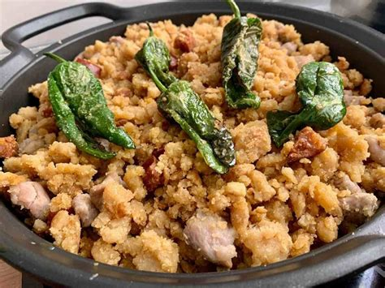
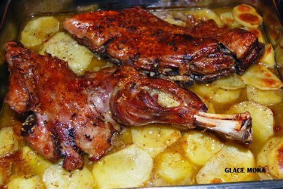
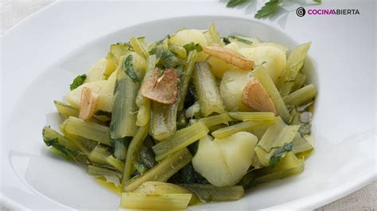
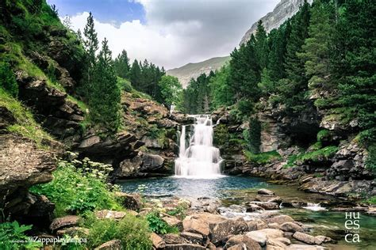
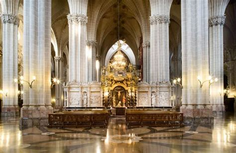
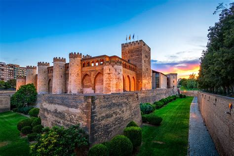
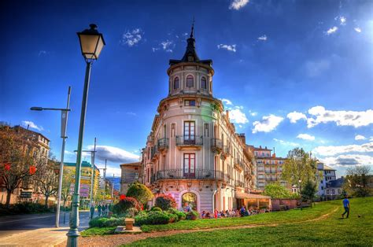
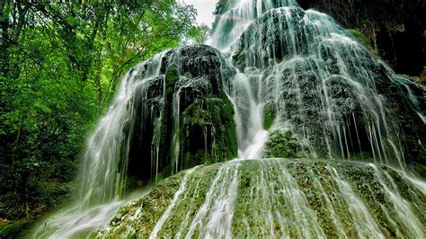
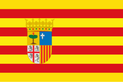
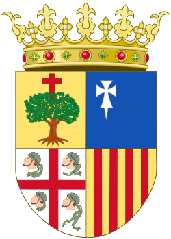

Aragón
Descripción
Aragón está en el noreste de España. Es una región con montañas, ríos y ciudades históricas. Tiene un gran patrimonio cultural y natural, como el Parque Nacional de Ordesa y Monte Perdido.
Datos Rápidos
- Capital: Zaragoza
- Idiomas Regionales: Español, Aragonés, Catalán
- Población: ~1.3 millones
- Famosa por: Naturaleza, historia, arte románico
- Dato Curioso: El Parque Nacional de Ordesa es uno de los más antiguos de España.
Platos Populares
Migas

Ternasco Asado

Borraja con Patatas

Pollo al Chilindrón

Lugares Famosos
Parque Nacional de Ordesa y Monte Perdido

La Seo de Zaragoza

Palacio de la Aljafería

Ciudad de Jaca

Monasterio de Piedra

Mejor época para visitar
La mejor época para visitar Aragón es en primavera (abril a junio) y otoño (septiembre a noviembre), cuando el clima es bueno y hay menos turistas.
Símbolos Regionales
- Bandera: 
- Escudo: Símbolo con barras rojas y amarillas y un águila negra 